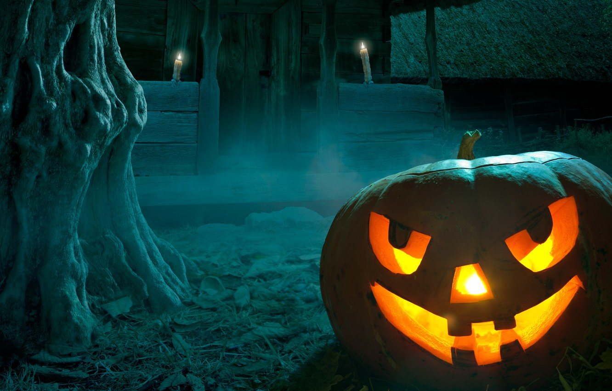
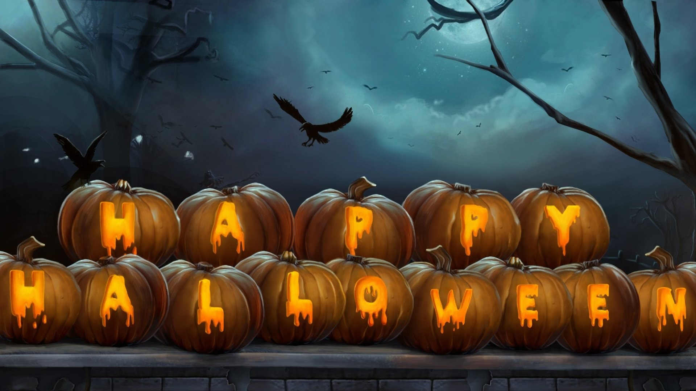
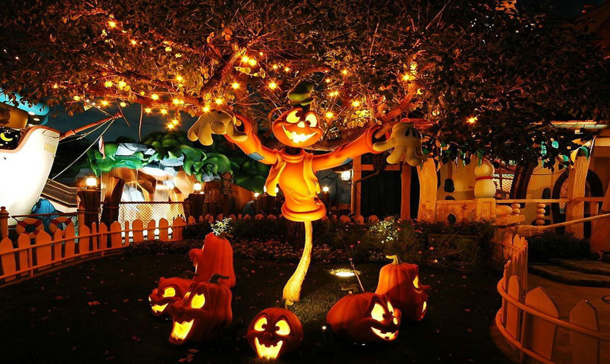
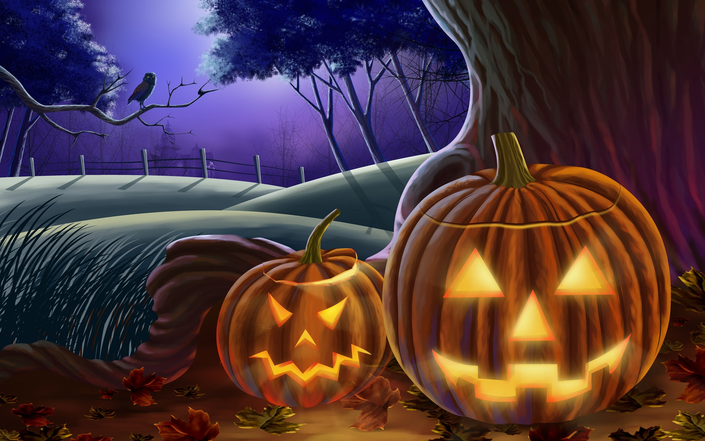
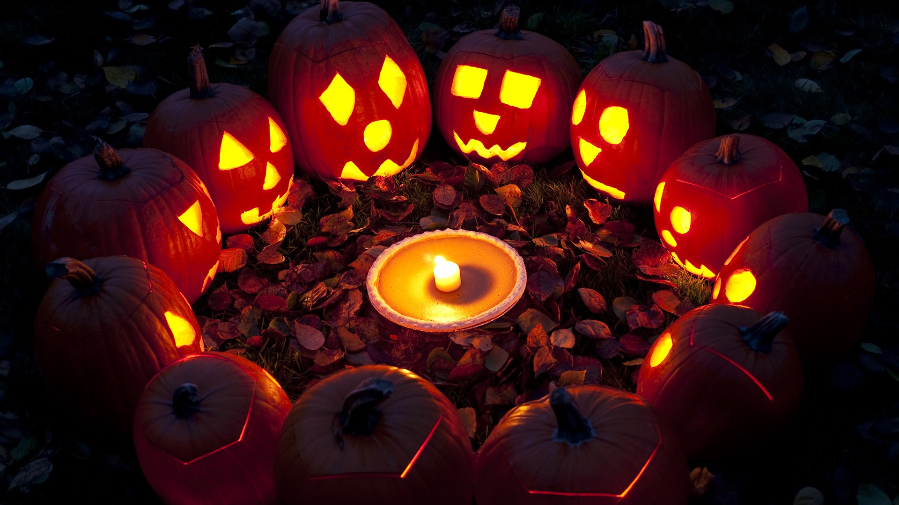

История
Историк Николас Роджерс, изучавший истоки Хэллоуина, отмечал, что, несмотря на попытки связать его происхождение с древнеримским праздником Паренталий (от parentes — родители), который праздновался 13-21 февраля, прообраз Хэллоуина, вероятнее всего, зародился только с появлением кельтского языческого празднества Самайн, празднование которого длилось семь суток — по трое суток до и после самого Самайна в ночь на 31 октября, описание которого появляется в староирландской литературе начиная с X века. Название этого праздника произошло от староирландского слова Samhain, которое означало «конец лета» и впоследствии превратилось в ирландское название месяца ноября.
Хэллоуин
Согласно Оксфордскому словарю фольклора, Самайн был праздником одновременно для всех народов Британских островов и прочно ассоциировался со смертью и сверхъестественным. В то же время нет никаких доказательств того, что в языческие времена праздник имел какое-либо особое значение, кроме сельскохозяйственного и сезонного.

В 601 году папа Григорий I проинструктировал миссионеров не бороться с языческими праздниками, а обращать их в христианские — по его замыслу, это должно было способствовать христианизации Северной Европы.

К VIII веку праздник Самайн стал Днём всех душ и Днём Всех Святых (1 ноября), в который разговаривать с умершими считалось с точки зрения религии вполне допустимым.

Подобное взаимопроникновение гэльских традиций и христианских обрядов начало формировать первые зачатки Хэллоуина. Лишь спустя два века после утверждения Дня Всех Святых (примерно через 400 лет после принятия Ирландией христианства) — на рубеже X—XI веков, — в записях монахов наблюдается смещение в восприятии Самайна в сторону тёмного языческого праздника, связанного со смертью.